Leofren Technologies · Access Control
Decide, per user and company, which operations users may do on each model — checked on the server — and which menus, views, fields, buttons, tabs, reports and chatter parts they see. All from one screen, without writing code.
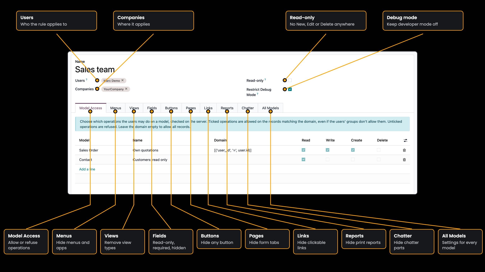
Everything a rule can do. Each one is shown live below.
Decide which operations users may do on each model, on the records matching a domain. Odoo checks it on the server: the web client, imports, exports and the API all follow it.
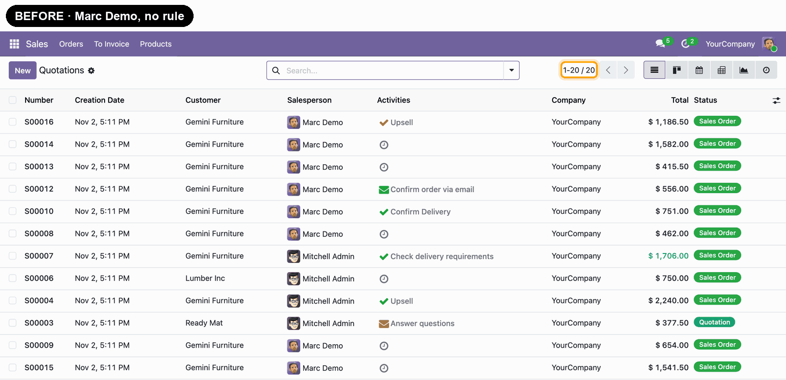
With the domain [('user_id', '=', user.id)], Marc Demo sees and edits only his own quotations: 13 instead of 20.
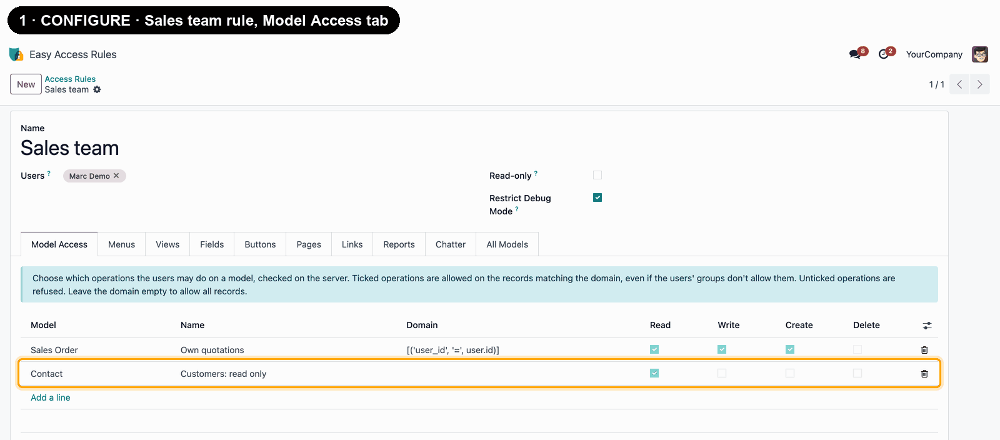
Only Read is ticked for contacts: the New button disappears, every field is locked, and the server refuses changes too.
Make any field read-only, required or hidden in the form, list and kanban views of a model.
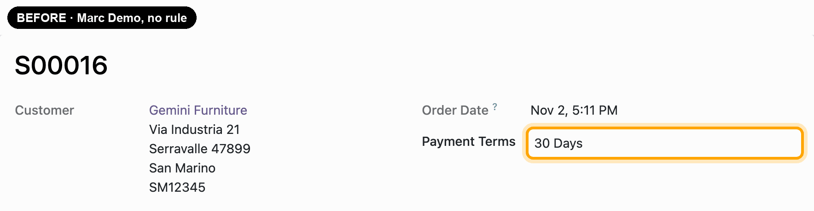
Payment Terms stays visible but can't be changed.
Hide any button, smart buttons included, and any tab of a form. Pick the model and its views are scanned for you.
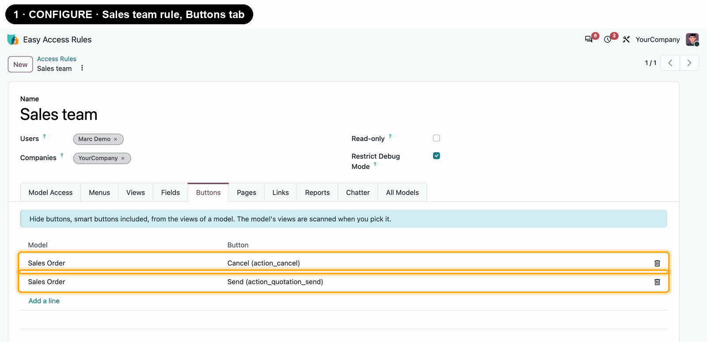
Both Send buttons and Cancel are removed from the quotation.
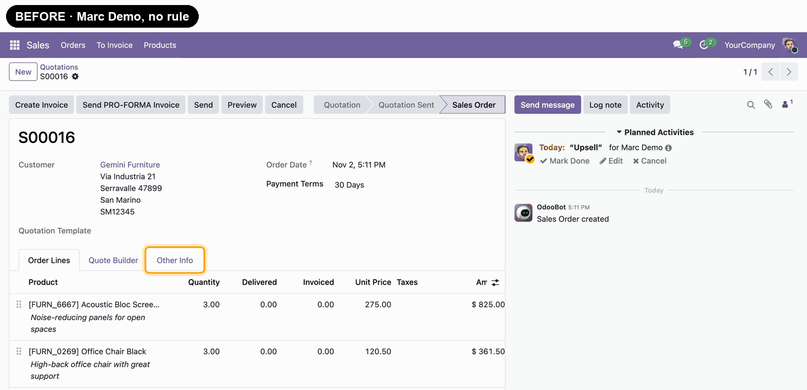
The Other Info tab is removed from the quotation.
Remove menus, with their sub-menus, from the navigation, and views from the view switcher.
Hide one report or a model's whole Print menu, and restrict importing and exporting records.
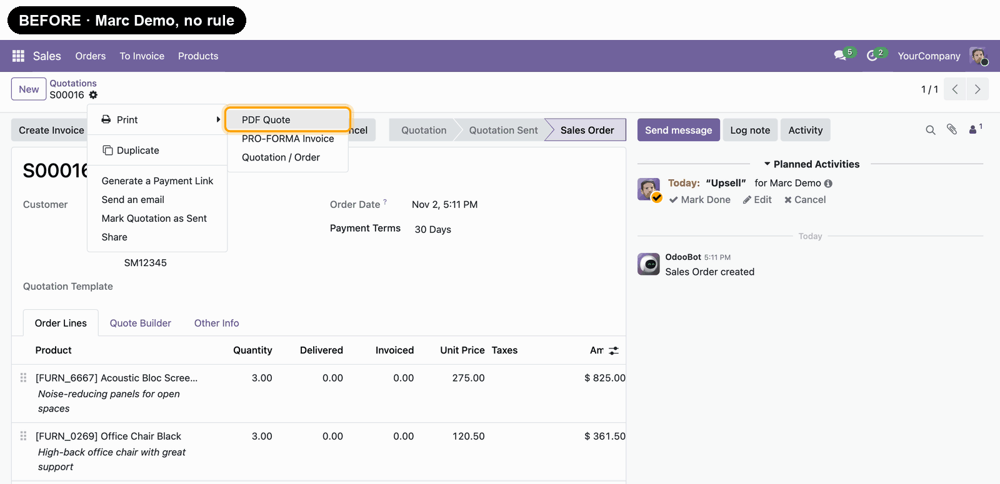
PDF Quote is removed from the Print menu; the other reports stay.
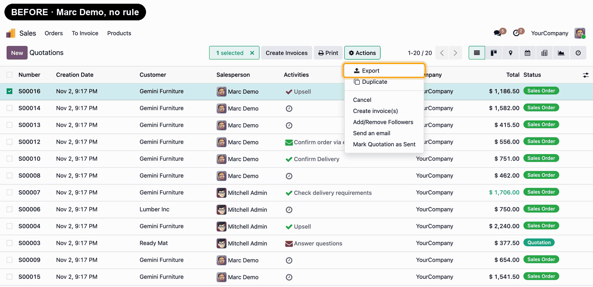
Export is removed from the Actions menu, and the server refuses exports too.
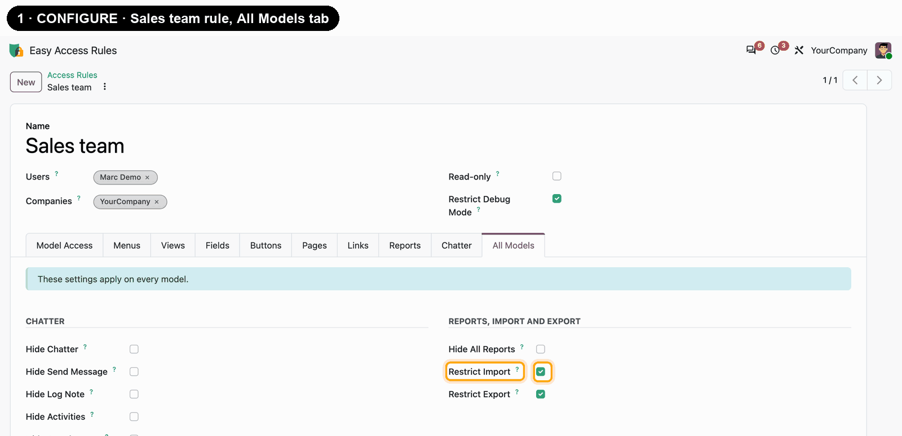
Import records is removed; the server refuses imports too.
Hide parts of the chatter on one model, or on every model at once.
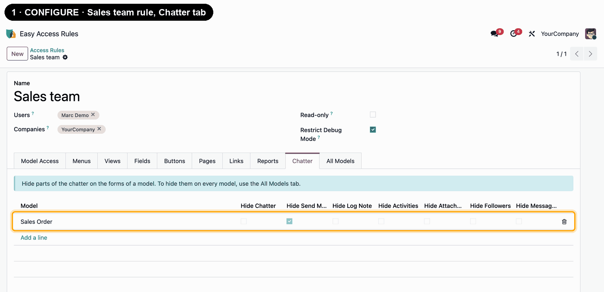
Send message is gone; Log note and Activity stay.
Make users read-only everywhere with one checkbox, and keep developer mode switched off for them.
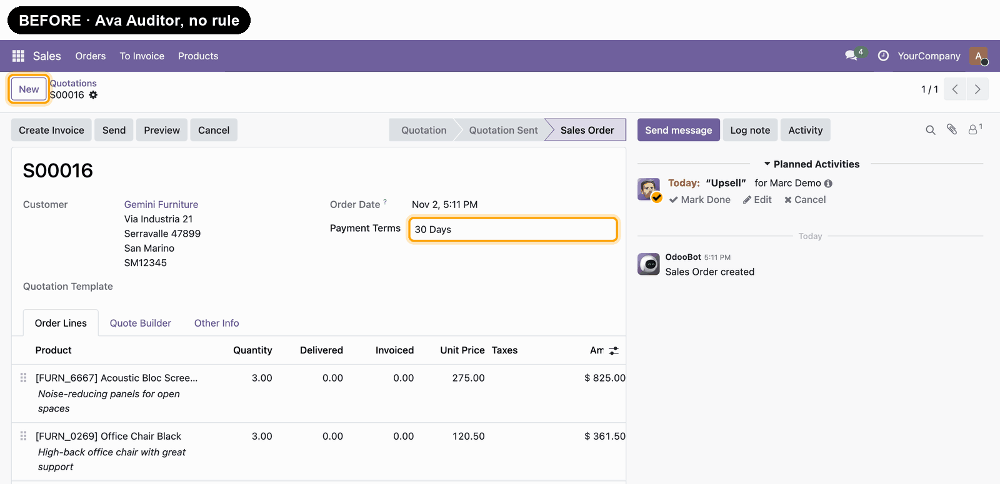
Ava Auditor can read everything but create, edit or delete nothing.
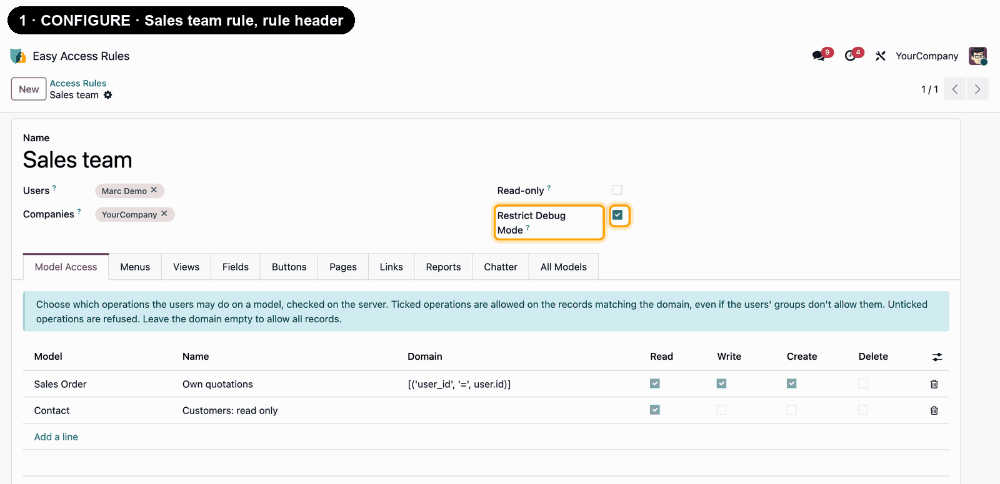
Even with ?debug=1 in the URL, developer mode stays off.
Install Access Management from the Apps menu. The administrator can manage the rules straight away.
Other users who should manage rules need the Easy Access Rule / Administrator access right in Settings → Users.
Open Easy Access Rules, create a rule, pick its users and companies, fill in the tabs you need and save. It applies right away — no restart.
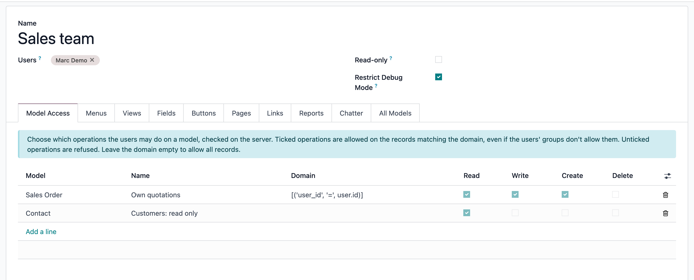
Good to know: hiding a field, button or menu changes what users see. To stop them from reading or changing records — including through imports, exports or the API — use Model Access, which Odoo checks on the server.
Yes — it works with both Odoo Enterprise (on-premise and Odoo.sh) and Community. Odoo Online (cloud) does not allow installing third-party apps, so this module can't be installed there.
Users with the Easy Access Rule / Administrator access right, set in Settings → Users. The administrator has it by default. Other users can't see or change the rules.
It changes the screens only. To refuse reading, changing, creating or deleting records, add a Model Access line: Odoo checks it on the server, for the web client, imports, exports and the API alike.
Everything any of their rules hides stays hidden. For Model Access, an operation is allowed when one of the user's lines for that model allows it, on the records matching its domain.
A rule applies while its users work in one of the rule's companies, also when several companies are selected in the company switcher. Leave Companies empty to apply it in every company.
Almost. Users, groups, companies and Odoo's technical models can't get Model Access lines, so a rule can never lock users out of logging in or let them raise their own rights.
Yes, archive it. An archived rule restricts nobody until you restore it.
Yes, get in touch and we'll scope a customization for your use case.
Access Management is free to install. Reach out any time and we'll help you set up your rules.
contact@leofren.com